消费者买的不只是“更白”，也是更安心、更确定的变好。美白赛道的核心焦虑不是缺产品，而是缺少可信任的品牌表达。
BRAND STRATEGY / CONTENT CAMPAIGN / OFFLINE EXPERIENCE
HBN 原白屋
品牌整合营销策划
围绕“慢慢发光，不必赶场”的核心概念，设计线下快闪体验与社交传播结合的整合营销方案，尝试用场景化体验降低护肤焦虑，建立年轻消费者对品牌的长期心智。
2025品牌策划活动创意内容传播用户洞察
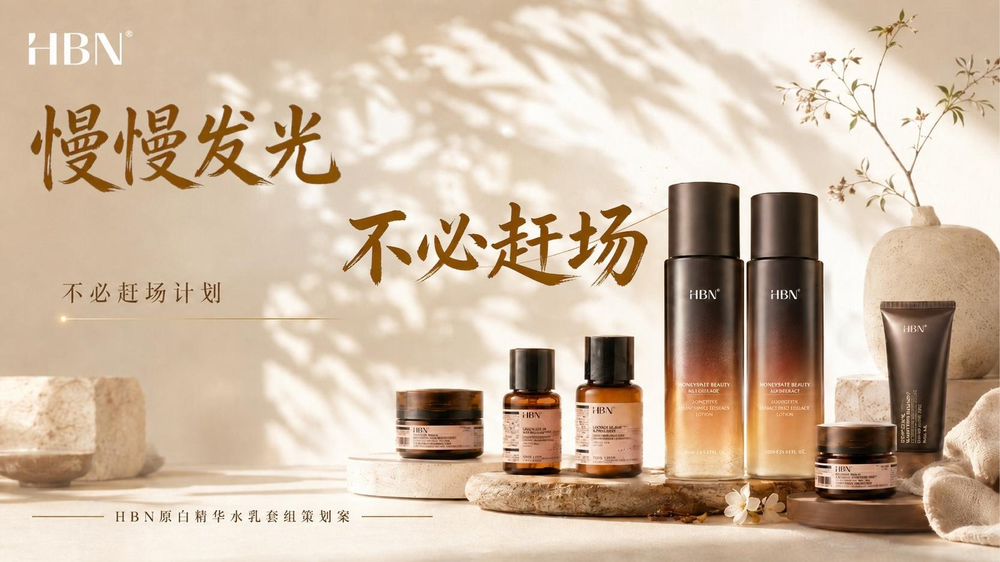
以阿那亚海边场域为核心，设计“原白屋”沉浸式体验空间，串联发布会、快闪体验、用户共创与社交传播。
将 HBN 的“慢科研、真功效、长期主义”转化为可感知的线下体验与内容传播路径，让品牌理念从产品卖点进入用户生活场景。
BACKGROUND / SECTION 01
她们的故事，也是我们的答案
在同一段时间里，有人急着被看见，有人在慢慢扎根。HBN 的品牌机会不只是讲述功效，而是回应用户在“速成焦虑”中的真实情绪：她们希望变好，但不希望被催促；她们期待效果，也更需要安全、稳定、长期的陪伴。
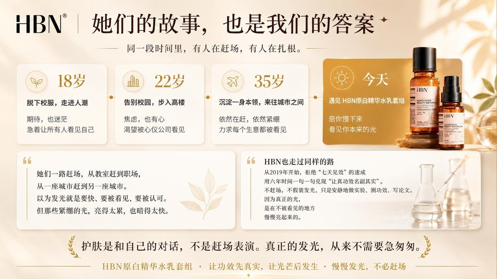
INSIGHT / SECTION 02
缺的不是产品，而是被信任的品牌
美白赛道需求旺盛，但行业中存在功效焦虑、信任不足和差异化不足的问题。用户真正关心的不只是“更快变白”，而是安全、真实、可持续的变好。
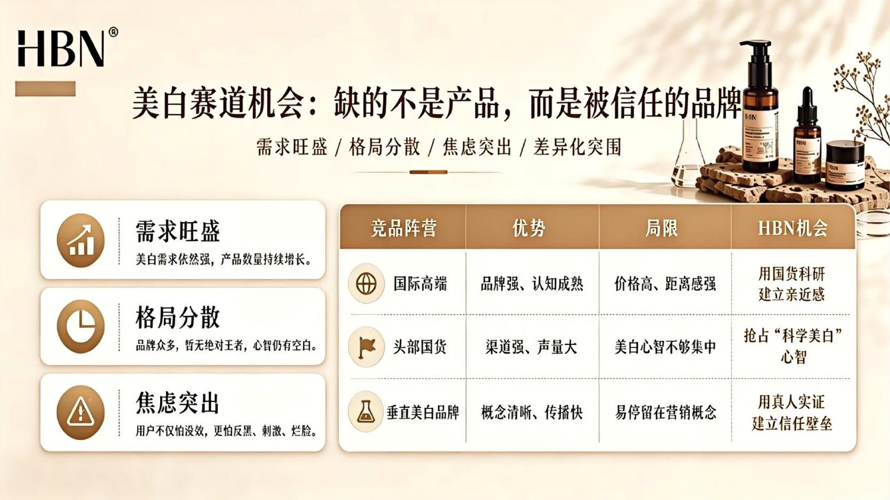
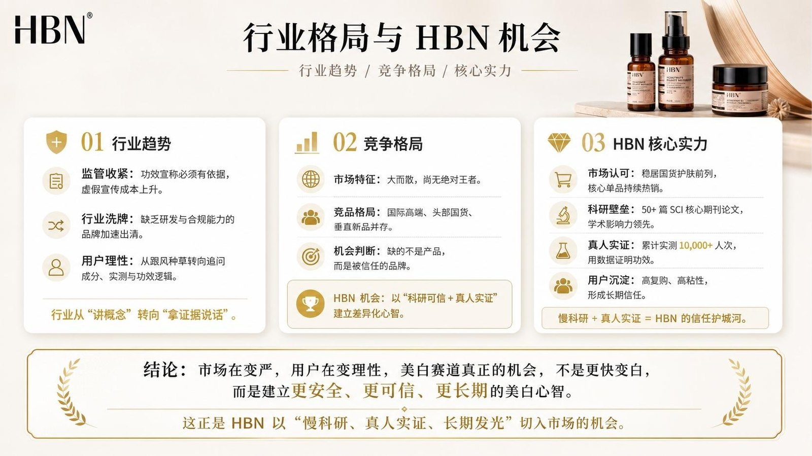
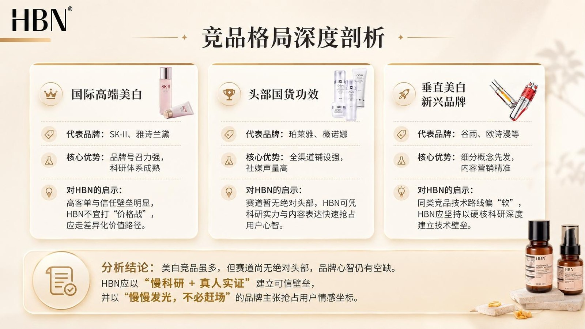
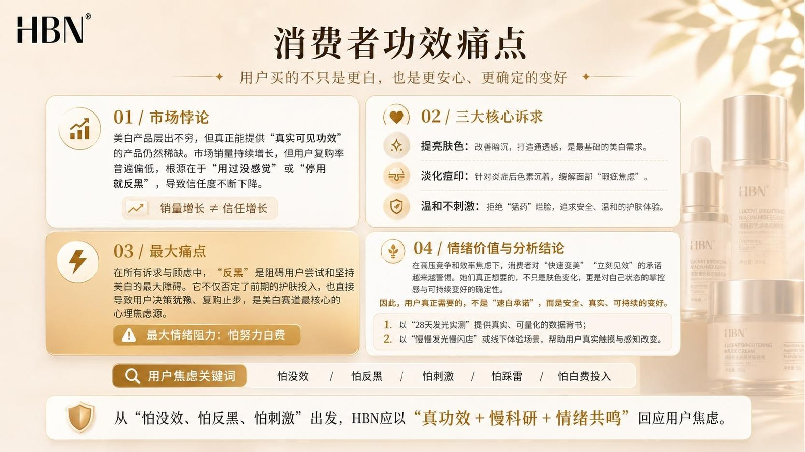
需求旺盛
美白需求强，但用户更理性，期待看得见、能验证、可持续的功效。
焦虑突出
用户害怕没效、反黑、刺激和白费投入，购买前需要更充分的信任感。
品牌机会
HBN 可用慢科研、真人实证和真实体验，把功效卖点转化为品牌信任。
STRATEGY / SECTION 03
慢慢发光，不必赶场
将 HBN 的长期主义护肤理念转化为品牌主张。这不仅是护肤态度，也是一种生活态度：品牌不再催促用户快速变美，而是陪伴用户在自己的节奏里稳定发光。
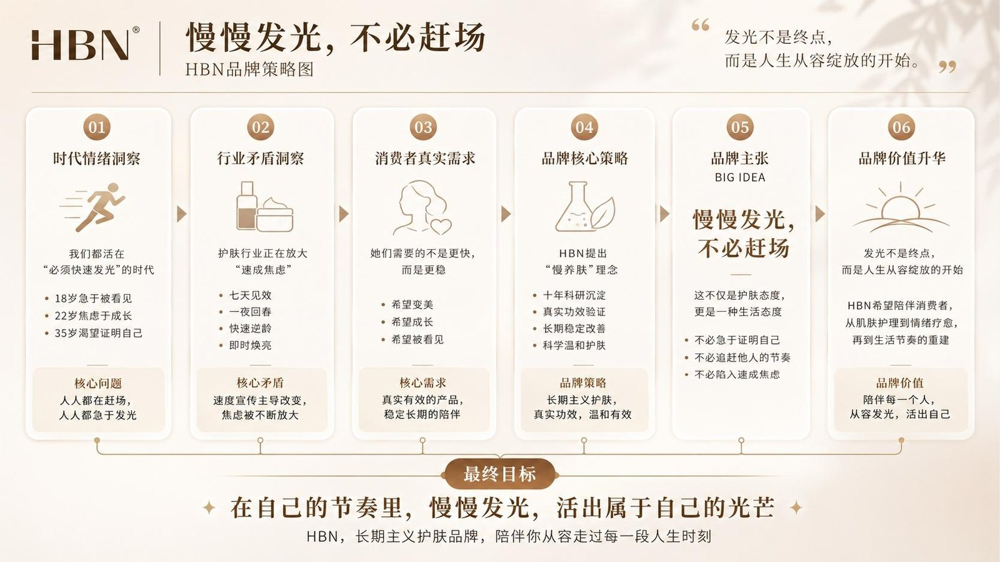
时代情绪洞察行业矛盾洞察消费者真实需求品牌核心策略品牌主张品牌价值升华
EXECUTION / SECTION 04
HBN × 阿那亚「不必赶场计划」
以阿那亚海边场域为起点，将情绪共鸣、产品体验、用户共创与销售转化串联成完整品牌落地路径。活动不是单纯的快闪店，而是一套从内容预热、线下体验到社交传播的整合运营方案。
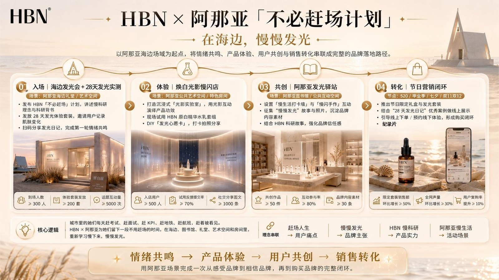
入场：海边发光会
用发布会建立品牌主张的第一轮声量。
体验：焕白光影慢闪店
把产品功效转化为可感知的现场体验。
共创：阿那亚发光驿站
让用户参与内容生产和品牌故事共创。
转化：节日营销闭环
承接体验热度，形成销售与复购路径。
情绪共鸣 → 产品体验 → 用户共创 → 销售转化
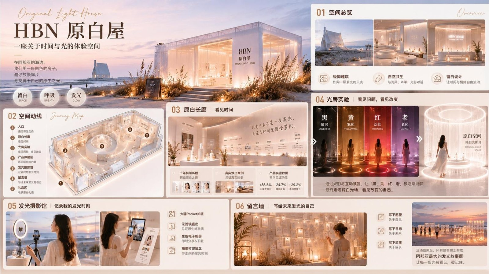
EXPERIENCE / SECTION 05
原白屋：一座关于时间与光的体验空间
“原白屋”不是卖产品的空间，而是品牌理念的沉浸式承载体。通过原白长廊、光房实验、产品体验区、发光摄影馆和留言墙，让用户在真实体验中感知 HBN 的“慢科研、真功效”。
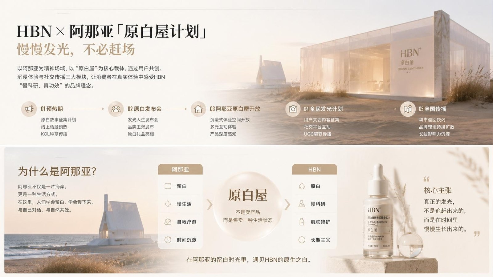
原白长廊：看见时间光房实验：看见问题，看见改变产品体验区：真实试用，感知功效发光摄影馆：记录用户发光时刻留言墙：写给未来发光的自己
COMMUNICATION / SECTION 06
从一次体验，到一次可传播的品牌记忆
活动通过“发光发布会”“焕白光影快闪店”“阿那亚发光驿站”等多个场景，把用户体验转化为可分享、可传播、可沉淀的内容资产。用户不只是到场体验者，也成为品牌故事的共创者。
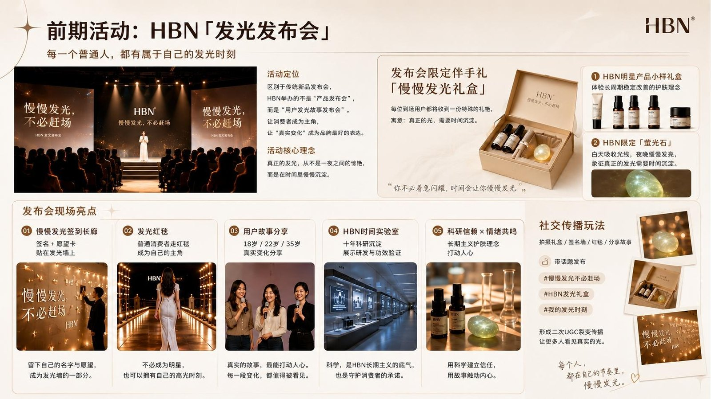
发光发布会
制造品牌主张的第一轮声量。
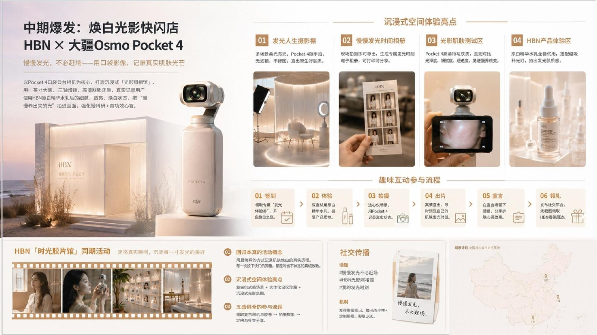
光影快闪店
用影像记录真实肌肤状态，生成可分享内容。
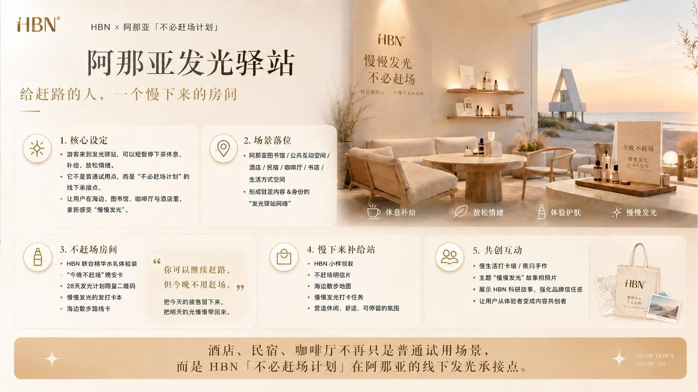
发光驿站
把酒店、民宿、咖啡厅等空间变成品牌触点。
ROLE / SECTION 07
我在项目中负责什么
我参与了从用户洞察、主题表达、活动路径到方案呈现的整理过程，重点是把创意变成可被理解、可被展示的品牌方案。
用户洞察
参与用户洞察与市场痛点拆解，提炼美白消费中的焦虑与真实需求。
策略梳理
参与品牌主题与传播概念梳理，将“慢慢发光，不必赶场”作为核心表达。
活动策划
参与活动路径设计，将发布会、快闪体验、用户共创和节日转化串联成完整链路。
视觉表达
参与 PPT 视觉呈现与内容结构优化，让策划案从想法变成可展示、可理解的品牌方案。
AI辅助
使用 AI 辅助部分视觉想象与场景表达，提高方案表现力。
VALUE / SECTION 08
项目复盘
这个项目让我意识到，品牌策划不是简单提出一个好听的口号，而是要让用户情绪、产品价值、活动场景和传播路径形成闭环。对于运营岗位而言，我在这个项目中训练到的不只是创意表达，更是从用户洞察到项目落地的完整思考方式。
如果继续深化
- 补充更真实的用户调研数据。
- 将传播效果拆解为曝光、互动、到场、转化四类指标。
- 进一步细化活动执行排期和预算测算。
- 增加小红书、抖音、视频号等平台内容发布策略。
从用户焦虑出发，用内容与场景建立品牌信任。